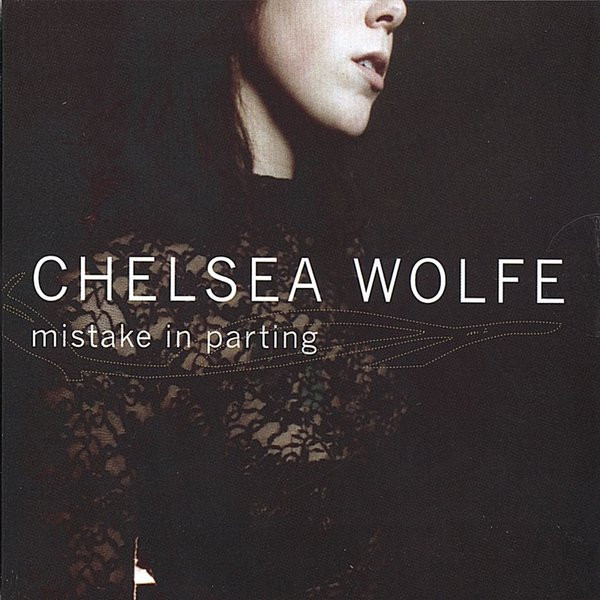
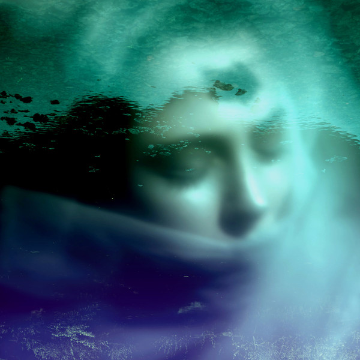
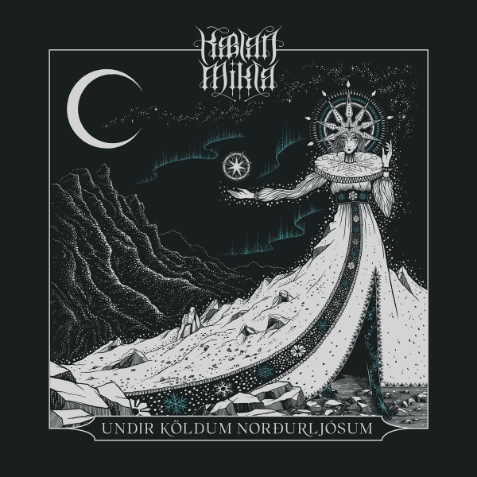

library_music Chelsea Wolfe - Sonidos del mundo de los sueños

| Genero | Indie Folk - Alternative |
| Pais | Estados Unidos |
| Sitio Web | www.chelseawolfe.com |
Primeros años
Chelsea Wolfe nació en Roseville, California, y creció en Sacramento. Es de ascendencia noruega y alemana. Su padre formó parte de una banda de música country y tenía un estudio en su casa. Para los 7 años, Wolfe ya había escrito su primer poema, y para los 9, escrito y grabado canciones.
Durante su infancia y adolescencia, Wolfe luchó contra la parálisis del sueño, lo que la llevó a ser hospitalizada para realizar estudios; estas experiencias sirvieron como material para sus álbumes Abyss y Hiss Spun
Wolfe vivió con su abuela durante una parte de su niñez, quién le enseñó aromaterapia, Reiki y "otros reinos"
Carrera musical
2006: Mistake in Parting
En 2006 Wolfe compuso un álbum, Mistake in Parting, que nunca fue oficialmente liberado. Wolfe comentó que descartó el álbum en gran parte porque había sido escrito sobre acontecimientos de su vida personal: " estaba escribiendo cosas realmente personales sobre mi propia vida, y no me sentí cómoda... No quería que mi música fuera tanto sobre mí, y tuve que encontrar una perspectiva nueva".
2010-2012: The Grime and the Glow y Apokalypsis
El primer álbum de Wolfe, The Grime and the Glow (2010), se publicó por la discográfica independiente de Nueva York Pendu Sound Recordings, precedido en el mismo año por los álbumes de edición limitada Soundtrack VHS/Gold y Soundtrack VHS II. Con su siguiente álbum, Apokalypsis (2011), estilizado Ἀποκάλυψις, obtuvo seguidores en el underground, así como elogios críticos aclama, con revisiones favorables en Pitchfork y CMJ. Wolfe realizó expensas giras en América del Norte y Europa para promocionar ambos álbumes, y sufrió de un intenso miedo escénico; cuándo empezó a actuar en vivo, Wolfe llevaba un velo negro sobre su cara.
2012-presente: Sargent House
En 2012, Wolfe versionó cinco canciones de la banda británica anarcopunk Rudimentari Peni, y los publicó con el nombre A Tribute To Rudimentary Peni el 17 de febrero como una descarga gratuita en Pendu Sound. Más tarde, grabó las canciones de Peni con su banda en Southern Studios, en Londres, y los liberó como un EP, Prayer for the Unborn, en enero de 2013 por la discográfica Southern Records.
Wolfe firmó con la discográfica Sargent House en 2012 para publicar su tercer álbum. Unknown Rooms: A Collection of Acoustic Songs fue lanzado el 6 de octubre de 2012, y presentó un sonido más orientado al folk, en oposición a su trabajo anterior, que se centraba en guitarras eléctricas zumbantes y distorsión. El primer sencillo, "The Way We Used To", se estrenó en NPR. El segundo sencillo, "Appalachia", estuvo disponible el 20 de septiembre.
Wolfe publicó un álbum en vivo, Live at Roadburn, el 28 de septiembre de 2012, grabado el 12 de abrirl de ese año en el Festival Roadburn en Tilburg, Países Bajos.28 Su cuarto álbum de estudio, Pain Is Beauty , fue liberado el 3 de septiembre de 2013, seguido por una gira norteamericana.2930 Durante 2013 y 2014, Wolfe liberó dos sencillos con King Dude, C Sing Songs Together... y Sing More Songs Together...., así como un EP en vivo Chelsea Wolfe Folkadelphia Session. Wolfe aportó voces invitadas para el quinto álbum de estudio de la banda de post-metal estadounidense Russian Circles, con quienes compartió una gira por Europa a fines del 2013.
En 2014, lanzó una película, Lone, con música de Pain Is Beauty, dirigida por Mark Pellington.
"Carrion Flowers", "Iron Moon" y "After the Fall" fueron el segundo, tercer y cuarto sencillo, respectivamente, de su siguiente álbum, Abyss (2015).
El 1 de abril de 2016, Wolfe liberó el sencillo "Hypnos", precedido por un vídeo musical del 22 de marzo.3637 En enero de 2017, anunció una gira al Reino Unido y Europa a comenzar en abril.
Su quinto álbum de estudio, Hiss Spun, fue publicado por Sargent House el 22 de septiembre de ese mismo año colaboró con la banda Myrkur, de la cantante danesa Amalie Bruun; así como con el álbum Ordinary Corrupt Human Love de Deafheaven en el 2018.
En enero de 2019, Wolfe anticipó un nuevo álbum en Twitter, escribiendo sólo "2019". El 12 de marzo reveló que el próximo álbum sería mayoritariamente acústico, estaba siendo grabado en los bosques del norte de California, y se inspira en eventos actuales. Su antiguo colaborador Ben Chisholm sería coproductor, y participarían algunos invitados como Jess Gowrie en la batería.
El 18 de junio de 2019, Wolfe anunció su sexto álbum de estudio, Birth of Violence, y lanzó el primer sencillo del mismo, "The Mother Road". El álbum fue liberado el 13 de septiembre de 2019.
Discografia
|  | Mistake in Parting | 2006 |
| Gold | 2009 | |
| The Grim and the Glow | 2010 | |
| Apokalypsis | 2010 | |
| Unknown Rooms: A Collection of Acousting Songs | 2012 | |
| Live at Roadburn | 2012 | |
| Pain is Beauty | 2013 | |
| Abyss | 2015 | |
| Hiss Spun | 2017 | |
| Birth of Violence | 2019 | |
| Converge and Chelsea Wolfe - Bloodmoon I | 2021 | |
| Tyler Bates and Chelsea Wolfe - X (Original Soundtrack | 2022 |
library_music Kaelan Mikla - De Islandia para el mundo
Kælan Mikla es declarada una de las bandas actuales favoritas del mismo Robert Smith. Menudo orgullo no es para cuestionarse al haber sido invitadas al festival Meltdown, organizado por The Cure, con un cartel que incluía bandas del calibre de Interpol, Slowdive y RIDE, entre otros.

| Genero | Gothic - Darkwave |
| Pais | Islandia |
| Sitio Web | www.kaelanmikla.com/ |
Sólveig Matthildur, Margrét Rósa y Laufey Soffía conforman un trío de tendencia dark wave, post punk y synth wave, lo cual ha de haber sido lo que hiciera que le brillaran los ojos a Robert Smith. Normalmente Laufey es quien lleva la dirección en la voz, pero en algunas canciones se alterna. Las letras van sobre una poesía ensombrecida de ‘Næturblóm’; unas líneas obscurecidas que son exaltadas en potentes gritos como en ‘Kalt’; el intercambio y alternancia vocal entre Laufey y Sólveig, mientras esta última puntea una línea en el bajo a la que ocasionalmente matiza con modulación de chorus, como en ‘Nornalagið’.
Las secuencias rítmicas y progresiones melódicas son uno de los cambios más trascendentales en las composiciones del trío, pues antes contaban con una batería, como se aprecia en una sesión en vivo para KEXP en el 2014. Según relatan Sólveig y Margrét, en un inicio se habían reunido con la idea de unir ideas y experimentar, pero sin la idea de crear una banda. Al reclutar a Laufey en la voz, las cosas comenzaron a tomar más forma, centrándose en un Punk muy minimalista. La exploración con un pequeño sintetizador les abrió aún más el panorama de ideas, y en 2016 fueron firmadas por la disquera griega Fabrika Records para su álbum debut y homónimo.
Discografia
 |
Glimmer and Aska | 2014 |
 |
Kaelan Mikla | 2016 |
 |
Manadans (2013-2014) | 2017 |
|  | Nótt Eftir Nótt | 2018 |
|  | Undir Köldum Norðurljósum | 2021 |
searchBuscar Articulo
library_music Discos Destacados
 |
Chelsea Wolfe | Bloodmoon - 2021 |
 |
Kaelan Mikla | Undir Köldum Norðurljósum |
 |
Fever Ray | What They Call Us |